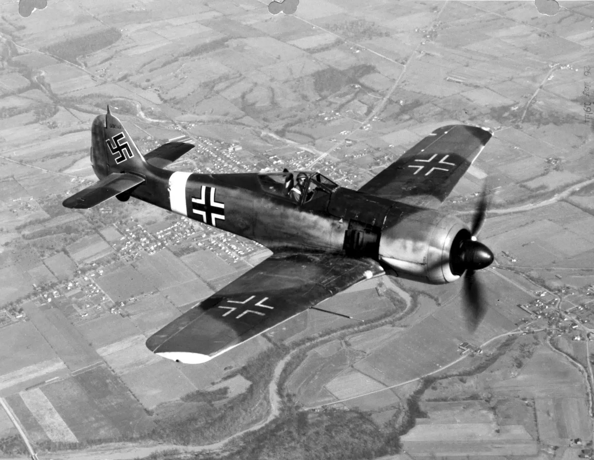

| Spesifikasi | Detail |
|---|---|
| Jenis | Pesawat Tempur |
| Awak | 1 orang (Pilot) |
| Panjang | Sekitar 8,95 - 10,20 m (tergantung varian) |
| Lebar Sayap | Sekitar 10,51 m |
| Tinggi | Sekitar 3,96 m (tergantung varian) |
| Berat Kosong | Sekitar 3.200 - 3.500 kg (tergantung varian) |
| Berat Lepas Landas Maksimum | Sekitar 4.400 - 4.900 kg (tergantung varian) |
| Mesin | Berbagai jenis, termasuk BMW 801 radial atau Junkers Jumo 213 V-12 (tergantung varian) |
| Tenaga Mesin | Sekitar 1.600 - 2.240 hp (tergantung varian) |
| Kecepatan Maksimum | Sekitar 650 - 710 km/jam (tergantung varian dan ketinggian) |
| Jarak Jelajah | Sekitar 500 - 900 km (tergantung varian) |
| Plafon Terbang | Sekitar 10.000 - 11.400 m (tergantung varian) |
| Persenjataan | Bervariasi tergantung model, umumnya meliputi:
|
| Produksi | Lebih dari 20.000 unit (berbagai varian) |